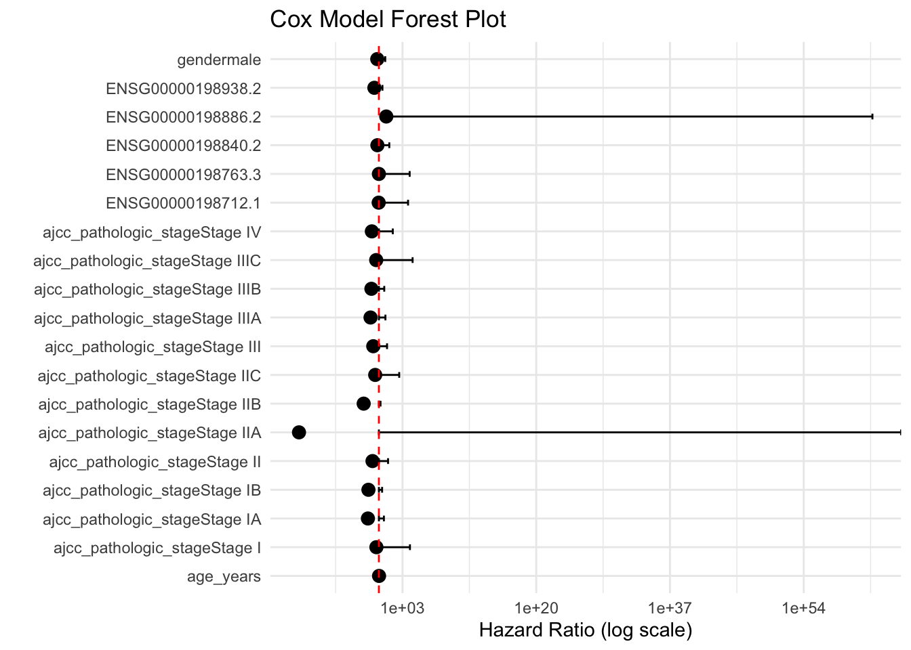

# --- Load required libraries ---
library(TCGAbiolinks)
library(SummarizedExperiment)Loading required package: MatrixGenericsLoading required package: matrixStats
Attaching package: 'MatrixGenerics'The following objects are masked from 'package:matrixStats':
colAlls, colAnyNAs, colAnys, colAvgsPerRowSet, colCollapse,
colCounts, colCummaxs, colCummins, colCumprods, colCumsums,
colDiffs, colIQRDiffs, colIQRs, colLogSumExps, colMadDiffs,
colMads, colMaxs, colMeans2, colMedians, colMins, colOrderStats,
colProds, colQuantiles, colRanges, colRanks, colSdDiffs, colSds,
colSums2, colTabulates, colVarDiffs, colVars, colWeightedMads,
colWeightedMeans, colWeightedMedians, colWeightedSds,
colWeightedVars, rowAlls, rowAnyNAs, rowAnys, rowAvgsPerColSet,
rowCollapse, rowCounts, rowCummaxs, rowCummins, rowCumprods,
rowCumsums, rowDiffs, rowIQRDiffs, rowIQRs, rowLogSumExps,
rowMadDiffs, rowMads, rowMaxs, rowMeans2, rowMedians, rowMins,
rowOrderStats, rowProds, rowQuantiles, rowRanges, rowRanks,
rowSdDiffs, rowSds, rowSums2, rowTabulates, rowVarDiffs, rowVars,
rowWeightedMads, rowWeightedMeans, rowWeightedMedians,
rowWeightedSds, rowWeightedVarsLoading required package: GenomicRangesLoading required package: stats4Loading required package: BiocGenerics
Attaching package: 'BiocGenerics'The following objects are masked from 'package:stats':
IQR, mad, sd, var, xtabsThe following objects are masked from 'package:base':
anyDuplicated, aperm, append, as.data.frame, basename, cbind,
colnames, dirname, do.call, duplicated, eval, evalq, Filter, Find,
get, grep, grepl, intersect, is.unsorted, lapply, Map, mapply,
match, mget, order, paste, pmax, pmax.int, pmin, pmin.int,
Position, rank, rbind, Reduce, rownames, sapply, saveRDS, setdiff,
table, tapply, union, unique, unsplit, which.max, which.minLoading required package: S4Vectors
Attaching package: 'S4Vectors'The following object is masked from 'package:utils':
findMatchesThe following objects are masked from 'package:base':
expand.grid, I, unnameLoading required package: IRangesLoading required package: GenomeInfoDbLoading required package: BiobaseWelcome to Bioconductor
Vignettes contain introductory material; view with
'browseVignettes()'. To cite Bioconductor, see
'citation("Biobase")', and for packages 'citation("pkgname")'.
Attaching package: 'Biobase'The following object is masked from 'package:MatrixGenerics':
rowMediansThe following objects are masked from 'package:matrixStats':
anyMissing, rowMedianslibrary(dplyr)
Attaching package: 'dplyr'The following object is masked from 'package:Biobase':
combineThe following objects are masked from 'package:GenomicRanges':
intersect, setdiff, unionThe following object is masked from 'package:GenomeInfoDb':
intersectThe following objects are masked from 'package:IRanges':
collapse, desc, intersect, setdiff, slice, unionThe following objects are masked from 'package:S4Vectors':
first, intersect, rename, setdiff, setequal, unionThe following objects are masked from 'package:BiocGenerics':
combine, intersect, setdiff, unionThe following object is masked from 'package:matrixStats':
countThe following objects are masked from 'package:stats':
filter, lagThe following objects are masked from 'package:base':
intersect, setdiff, setequal, unionlibrary(limma)
Attaching package: 'limma'The following object is masked from 'package:BiocGenerics':
plotMAlibrary(survival)
library(ggplot2)
# --- Load the SKCM dataset ---
load("SKCM.rda")
# --- Extract FPKM-UQ expression data and log-transform ---
fpkm <- assay(query2, "fpkm_uq_unstrand")
log_expr <- log2(fpkm + 1)
# --- Extract raw clinical data ---
clinical_raw <- colData(query2) %>%
as.data.frame()
# --- Extract batch information from TCGA barcode ---
ids <- as.character(colData(query2)$barcode)
batch <- sapply(strsplit(ids, "-"), function(x) {
if (length(x) >= 6) return(x[6]) else return(NA)
})
batch_id <- as.factor(batch)
# --- Identify complete samples ---
complete_samples <- !is.na(batch_id) &
!is.na(clinical_raw$gender) &
!is.na(clinical_raw$ajcc_pathologic_stage) &
!is.na(clinical_raw$days_to_death)
# --- Filter expression matrix, batch, and clinical data ---
log_expr_filtered <- log_expr[, complete_samples]
batch_id_clean <- batch_id[complete_samples]
clinical_clean <- clinical_raw[complete_samples, ] %>%
dplyr::select(patient, gender, vital_status, days_to_death,
ajcc_pathologic_stage, age_at_diagnosis) %>%
mutate(
survival_time = days_to_death / 365,
event = ifelse(vital_status == "Dead", 1, 0),
age_years = age_at_diagnosis / 365
)
# --- Create design matrix for batch correction ---
design <- model.matrix(~ gender + ajcc_pathologic_stage, data = clinical_clean)
# --- Check consistency ---
cat("Number of columns in expression matrix (samples):", ncol(log_expr_filtered), "\n")Number of columns in expression matrix (samples): 48 cat("Number of batch IDs (samples):", length(batch_id_clean), "\n")Number of batch IDs (samples): 48 cat("Number of rows in design matrix (samples):", nrow(design), "\n")Number of rows in design matrix (samples): 48 # --- Perform batch correction if dimensions match ---
if (ncol(log_expr_filtered) == length(batch_id_clean) && ncol(log_expr_filtered) == nrow(design)) {
combat_expr <- removeBatchEffect(
log_expr_filtered,
batch = batch_id_clean,
design = design
)
cat("Batch effect successfully corrected!\n")
} else {
stop("Sample number mismatch detected. Please check the filtering steps!")
}Coefficients not estimable: batch12 batch15 Warning: Partial NA coefficients for 60660 probe(s)Batch effect successfully corrected!# --- Select top 5 highly expressed genes ---
gene_means <- rowMeans(combat_expr, na.rm = TRUE)
top5_genes <- names(sort(gene_means, decreasing = TRUE))[1:5]
cat("Selected Top 5 genes:", paste(top5_genes, collapse = ", "), "\n")Selected Top 5 genes: ENSG00000198712.1, ENSG00000198938.2, ENSG00000198840.2, ENSG00000198886.2, ENSG00000198763.3 # --- Prepare Cox model input data ---
expr_selected <- combat_expr[rownames(combat_expr) %in% top5_genes, ]
expr_selected <- t(expr_selected)
colnames(expr_selected) <- top5_genes
cox_data <- clinical_clean %>%
dplyr::select(survival_time, event, gender, age_years, ajcc_pathologic_stage) %>%
mutate(
gender = factor(gender),
ajcc_pathologic_stage = factor(ajcc_pathologic_stage)
) %>%
bind_cols(as.data.frame(expr_selected))
# --- Build the Cox proportional hazards model ---
cox_model <- coxph(Surv(survival_time, event) ~ ., data = cox_data)Warning in coxph.fit(X, Y, istrat, offset, init, control, weights = weights, :
Loglik converged before variable 7 ; coefficient may be infinite.# Output model summary
summary(cox_model)Call:
coxph(formula = Surv(survival_time, event) ~ ., data = cox_data)
n= 48, number of events= 48
coef exp(coef) se(coef) z
gendermale -4.787e-01 6.196e-01 5.594e-01 -0.856
age_years 4.384e-02 1.045e+00 1.600e-02 2.740
ajcc_pathologic_stageStage I -7.349e-01 4.795e-01 1.501e+00 -0.490
ajcc_pathologic_stageStage IA -3.218e+00 4.002e-02 1.836e+00 -1.753
ajcc_pathologic_stageStage IB -3.064e+00 4.671e-02 1.529e+00 -2.004
ajcc_pathologic_stageStage II -1.870e+00 1.541e-01 1.457e+00 -1.283
ajcc_pathologic_stageStage IIA -2.339e+01 6.969e-11 4.157e+03 -0.006
ajcc_pathologic_stageStage IIB -4.455e+00 1.162e-02 1.884e+00 -2.365
ajcc_pathologic_stageStage IIC -1.082e+00 3.389e-01 1.461e+00 -0.740
ajcc_pathologic_stageStage III -1.654e+00 1.913e-01 1.287e+00 -1.285
ajcc_pathologic_stageStage IIIA -2.450e+00 8.632e-02 1.580e+00 -1.550
ajcc_pathologic_stageStage IIIB -2.191e+00 1.118e-01 1.346e+00 -1.627
ajcc_pathologic_stageStage IIIC -7.946e-01 4.518e-01 1.573e+00 -0.505
ajcc_pathologic_stageStage IV -2.065e+00 1.269e-01 1.769e+00 -1.167
ENSG00000198712.1 -6.459e-02 9.375e-01 1.127e+00 -0.057
ENSG00000198938.2 -1.325e+00 2.657e-01 6.942e-01 -1.909
ENSG00000198840.2 -4.401e-01 6.440e-01 7.918e-01 -0.556
ENSG00000198886.2 2.160e+00 8.673e+00 1.435e+00 1.505
ENSG00000198763.3 -4.258e-03 9.958e-01 1.123e+00 -0.004
Pr(>|z|)
gendermale 0.39210
age_years 0.00614 **
ajcc_pathologic_stageStage I 0.62438
ajcc_pathologic_stageStage IA 0.07957 .
ajcc_pathologic_stageStage IB 0.04510 *
ajcc_pathologic_stageStage II 0.19938
ajcc_pathologic_stageStage IIA 0.99551
ajcc_pathologic_stageStage IIB 0.01805 *
ajcc_pathologic_stageStage IIC 0.45910
ajcc_pathologic_stageStage III 0.19868
ajcc_pathologic_stageStage IIIA 0.12111
ajcc_pathologic_stageStage IIIB 0.10368
ajcc_pathologic_stageStage IIIC 0.61354
ajcc_pathologic_stageStage IV 0.24313
ENSG00000198712.1 0.95429
ENSG00000198938.2 0.05621 .
ENSG00000198840.2 0.57835
ENSG00000198886.2 0.13223
ENSG00000198763.3 0.99698
---
Signif. codes: 0 '***' 0.001 '**' 0.01 '*' 0.05 '.' 0.1 ' ' 1
exp(coef) exp(-coef) lower .95 upper .95
gendermale 6.196e-01 1.614e+00 0.2069927 1.8545
age_years 1.045e+00 9.571e-01 1.0125599 1.0781
ajcc_pathologic_stageStage I 4.795e-01 2.085e+00 0.0253100 9.0860
ajcc_pathologic_stageStage IA 4.002e-02 2.499e+01 0.0010958 1.4617
ajcc_pathologic_stageStage IB 4.671e-02 2.141e+01 0.0023323 0.9353
ajcc_pathologic_stageStage II 1.541e-01 6.487e+00 0.0088652 2.6803
ajcc_pathologic_stageStage IIA 6.969e-11 1.435e+10 0.0000000 Inf
ajcc_pathologic_stageStage IIB 1.162e-02 8.608e+01 0.0002892 0.4666
ajcc_pathologic_stageStage IIC 3.389e-01 2.950e+00 0.0193258 5.9441
ajcc_pathologic_stageStage III 1.913e-01 5.227e+00 0.0153609 2.3824
ajcc_pathologic_stageStage IIIA 8.632e-02 1.159e+01 0.0038987 1.9111
ajcc_pathologic_stageStage IIIB 1.118e-01 8.944e+00 0.0079872 1.5651
ajcc_pathologic_stageStage IIIC 4.518e-01 2.214e+00 0.0206864 9.8663
ajcc_pathologic_stageStage IV 1.269e-01 7.882e+00 0.0039602 4.0645
ENSG00000198712.1 9.375e-01 1.067e+00 0.1029820 8.5337
ENSG00000198938.2 2.657e-01 3.764e+00 0.0681504 1.0357
ENSG00000198840.2 6.440e-01 1.553e+00 0.1364386 3.0397
ENSG00000198886.2 8.673e+00 1.153e-01 0.5208056 144.4433
ENSG00000198763.3 9.958e-01 1.004e+00 0.1101392 9.0024
Concordance= 0.731 (se = 0.043 )
Likelihood ratio test= 36.45 on 19 df, p=0.009
Wald test = 21.22 on 19 df, p=0.3
Score (logrank) test = 27.01 on 19 df, p=0.1# --- Summarize Cox model results ---
cox_summary <- summary(cox_model)
# --- Extract clean HR, 95% CI, and p-values ---
result_table <- data.frame(
Variable = rownames(cox_summary$coefficients),
Coef = cox_summary$coefficients[, "coef"],
HR = exp(cox_summary$coefficients[, "coef"]),
Lower95CI = exp(cox_summary$conf.int[, "lower .95"]),
Upper95CI = exp(cox_summary$conf.int[, "upper .95"]),
P_value = cox_summary$coefficients[, "Pr(>|z|)"]
)
# --- Filter out invalid variables (Inf, 0, or NA HR) ---
result_table_clean <- result_table %>%
filter(
!is.infinite(HR),
HR != 0,
!is.na(HR)
)
# --- Plot the custom forest plot using ggplot2 ---
ggplot(result_table_clean, aes(x = Variable, y = HR)) +
geom_point(size = 3) +
geom_errorbar(aes(ymin = Lower95CI, ymax = Upper95CI), width = 0.2) +
geom_hline(yintercept = 1, linetype = "dashed", color = "red") +
scale_y_log10() +
coord_flip() +
theme_minimal() +
labs(
title = "Cox Model Forest Plot",
x = "",
y = "Hazard Ratio (log scale)"
)